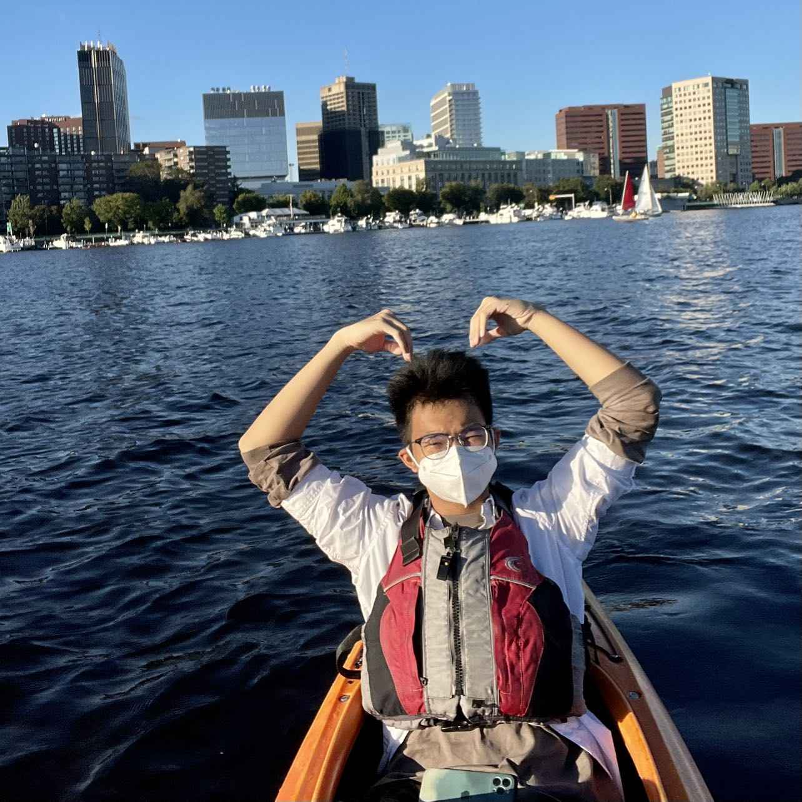

About Myself
Hey there! I'm Jinquan Pan, a student at Boston University pursuing a B.A. in Mathematics and Computer Science. My friends often describe me as a 'Computer Whisperer' - I have a knack for making machines do my bidding, especially when it comes to data analysis using Python and various related libraries. When I'm not immersed in my love for numbers and codes, you can find me planning my next travel adventure or sweating it out at the gym. My latest interest is diving into the fascinating world of network security. Protecting virtual assets while navigating the hidden lanes of the internet? Now that's a thrill!
Skills
- Python
- Data Analysis
- Machine Learning
- Network Security
- Additional Python libraries (pandas, numpy, scikit-learn, matplotlib)
Coursework
- Data Structure
- Computer System
- Software Engineering
- Data Mechanics
- Information Security
- Introduction to Algorithms
- Network Security
Contact Me
You can reach me via email: vin3nt@bu.edu
Let's connect on LinkedIn: Jinquan Pan